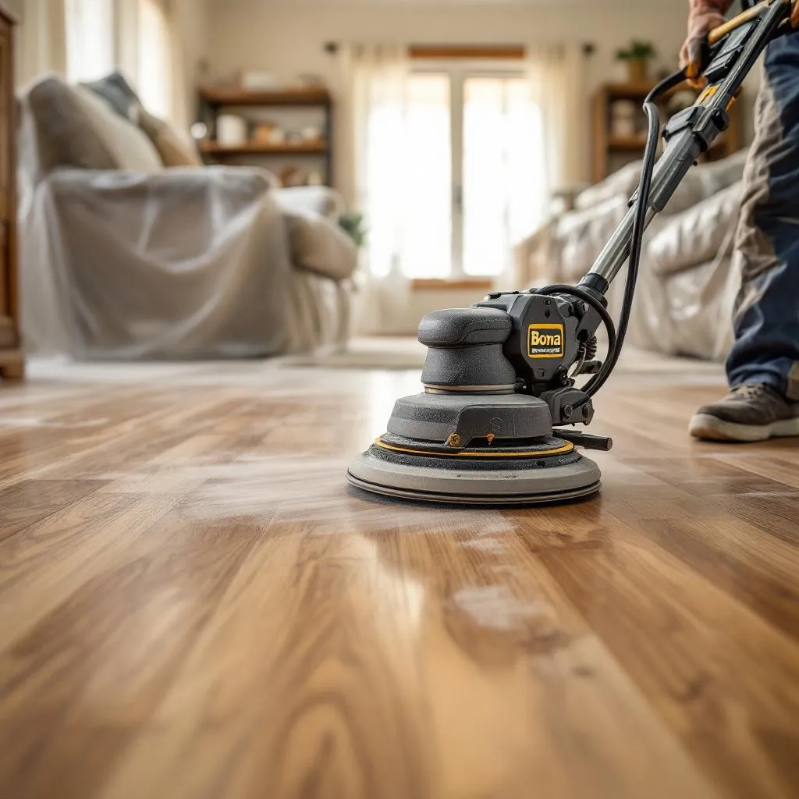

Experience Truly Dustless Floor Refinishing
See the difference HEPA-filtered dustless sanding makes. Free estimates for all Elkhorn homes.
Traditional floor sanding creates clouds of fine wood dust that settles everywhere in your home. Dustless technology eliminates 99% of it — and in a closed-up Nebraska house with the furnace or air conditioning running, that matters more than you'd think.

Dustless sanding uses industrial-grade vacuum systems with HEPA filtration connected directly to the sanding equipment. As the sander removes old finish and wood, the vacuum captures particles at the source — before they ever become airborne.
The system consists of three key components:
The result: 99% of sanding dust is captured before it reaches the air. No plastic sheeting on doorways, no weeks of cleaning dust out of cabinets, no fine particles coating every surface in your home.
Elkhorn sits at about 1,150 feet, so altitude is not the issue here. The issue is that Nebraska homes stay closed up for much of the year with the furnace or air conditioning running. Fine sanding dust can hang in the air for hours, and the HVAC system pulls it into the ducts and spreads it through the house.
In practical terms, this means:
Our HEPA-filtered dustless system was specifically chosen for Elkhorn conditions. We've tested it in local homes and confirmed it maintains 99%+ capture efficiency.
Wood dust isn't just messy — it's a legitimate health concern:
| Factor | Traditional Sanding | Dustless Sanding |
|---|---|---|
| Dust captured | ~50% | 99%+ |
| Plastic sheeting needed | Yes, every room | No |
| Stay in home during work | Not recommended | Yes, in most cases |
| Post-project cleanup | Days of deep cleaning | Minimal |
| HVAC contamination risk | High | Very low |
| Finish quality | Good (if dust settles before coating) | Excellent (cleaner surface = better adhesion) |
| Additional cost | Baseline | $0.50–$1.00/sq ft more |
Beyond the obvious cleanliness benefits, dustless sanding actually produces better finished results. Here's why: when dust particles settle on a freshly sanded floor before the finish is applied, they create micro-imperfections in the coating. These "nibs" look like tiny bumps in the finish and can lead to premature wear.
With dustless sanding, the floor surface stays exceptionally clean between sanding and finishing. The result is a smoother, more uniform finish that lasts longer — which is why we pair dustless sanding with our Bona Mega ONE commercial-grade finish system on every project.
At $0.50–$1.00 more per square foot, dustless sanding adds $500–$1,000 to a typical 1,000 sq ft project. For that investment, you get:
When you factor in the hidden costs of traditional sanding cleanup, dustless sanding often costs the same or less than the "cheaper" traditional approach. See our full refinishing cost breakdown for details.
Not all "dustless" claims are equal. When interviewing floor refinishing contractors in Elkhorn, ask:
At Elkhorn Hardwood, we use dustless technology on every sanding pass — drum sander, edger, and detail sanders. We don't cut corners on corners. Explore our full range of hardwood floor services or contact us for a free estimate.
See the difference HEPA-filtered dustless sanding makes. Free estimates for all Elkhorn homes.